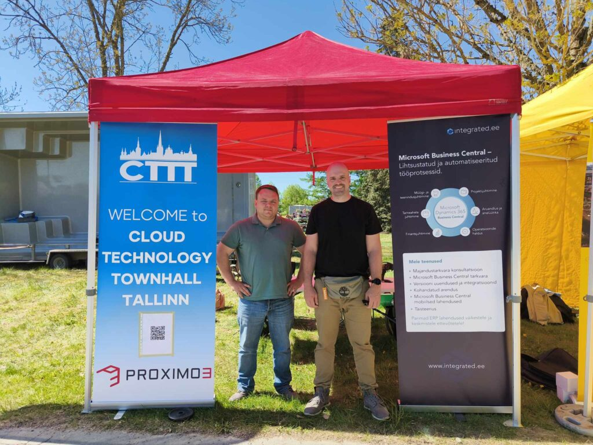

Käisime koos Stig Granlundiga sturx.ee-st Saku laadal tutvustamas Microsoft Dynamics 365 Business Centrali võimalusi väike- ja keskmistele ettevõtetele. Laat oli hea võimalus kohtuda ettevõtjatega, kes alles otsivad sobivat tarkvaralahendust oma ärile.
Tutvustasime Business Centrali põhifunktsioone — finantsjuhtimist, laohaldust, ostude ja müügi mooduleid ning seda, kuidas süsteem aitab korraldada igapäevast äritegevust. Huvi oli suur ja vestlused sisukad. Täname kõiki, kes meie stendile külla tulid!
